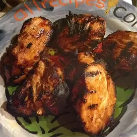

Bill's Chicken Marinade

Description
A perfect marinade for making delicious barbeque chicken. Perfected by Bill
Graham, aka 'Papa'.
Ingredients
- 1/4 cup olive oil
- 1/2 cup light soy sauce
- 1 Tpsp chili powder
- 5 cloves garlic
- 1/4 tsp liquid smoke
- 1/4 tsp sesame oil
Steps
- Add olive oil, light soy sauce, liquid smoke and sesame oil to a container large
enough to hold your chicken.
-
Peel garlic cloves and press with a garlic press. If you don't have access to a
garlic press you can finely chop the cloves instead. Add pressed/chopped garlic to
your other ingredients.
- Add your chicken to the marinade and coat thouroughly.
- Let chicken marinate in refrigerator for at least two hours, but preferable overnight.
Flip chicken over halfway through to be sure both sides are covered evenly.
- Cook chicken as you would normally, prefereably by barbequeing it.
- Enjoy!